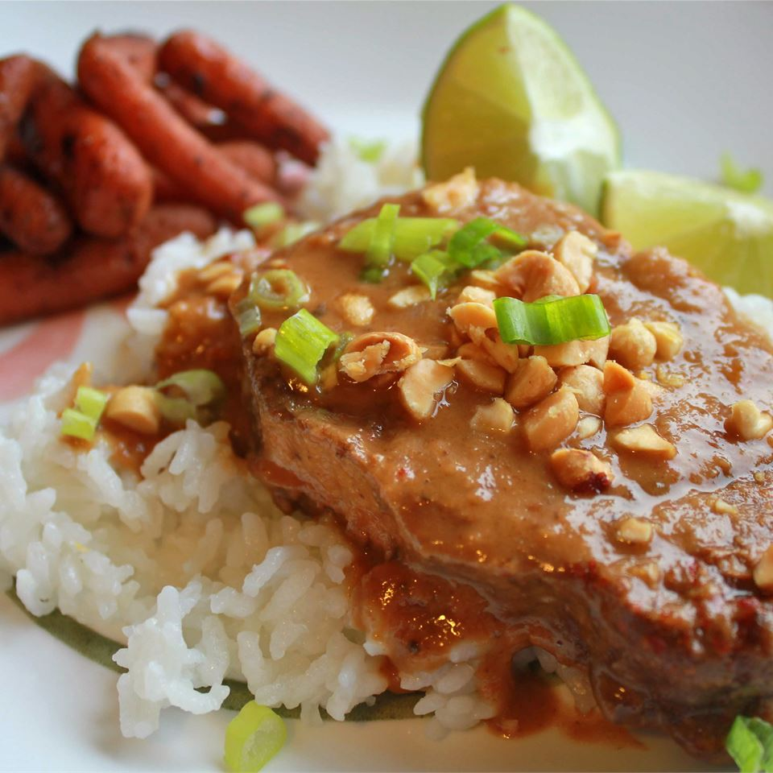

Thai-style Peanut Butter Pork

Description
A Southeast Asian classic, peanut butter pork slow-cooked in the crock pot is sure to be a crowd-pleaser in your house.
Ingredients
- 2 red bell pepper
- 4 boneless pork loin chops
- 1/2 cup teriyaki sauce
- 2 Tbsp rice vinegar
- 1 tsp red pepper flakes
- 2 cloves garlic, minced
- 1/2 cup chopped green onions
- 1/4 cup chopped roasted peppers
- 2 limes, cut into wedges
Steps
- Coat a slow cooker with cooking spray. Place the bell pepper strips and pork chops into the slow cooker. Pour the teriyaki sauce, vinegar, red pepper flakes, and garlic over the pork chops.
- Cover and cook on Low until the pork is very tender, 8 to 9 hours. Once tender, remove the pork from the slow cooker, and whisk in the peanut butter until smooth. Return the pork to the slow cooker, and cook 10 minutes more.
- Pour into a serving dish and sprinkle with green onions and peanuts to garnish. Decorate with lime wedges to serve.